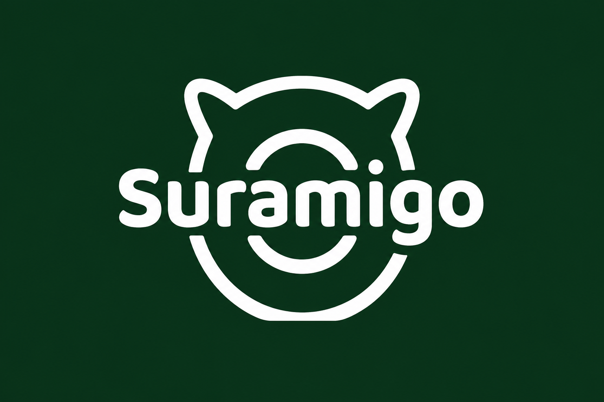
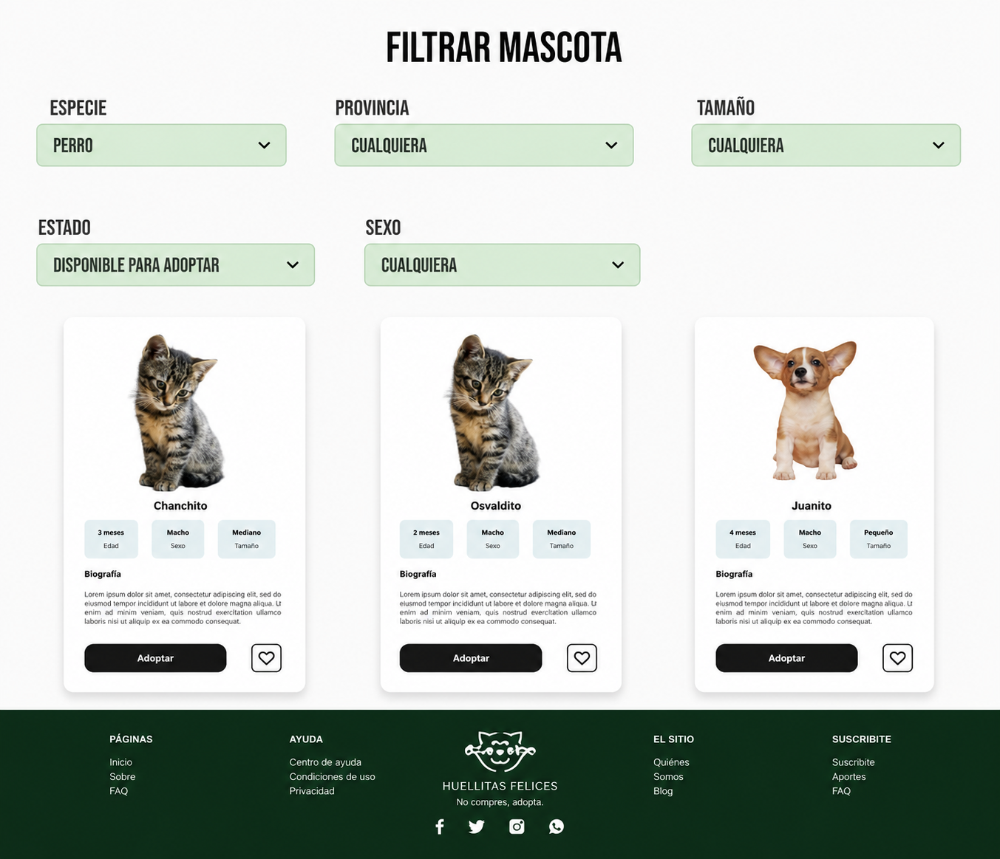
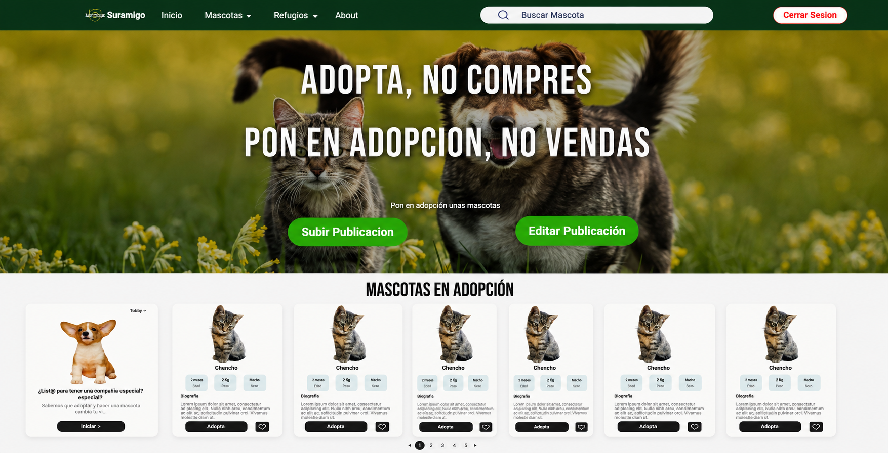
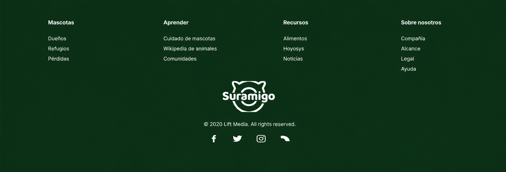

Proyecto propio · MVP
Plataforma para conectar refugios y personas que buscan adoptar, con foco en publicar, buscar y filtrar mascotas disponibles.

Muchos refugios y personas particulares publican mascotas en adopción de forma dispersa, sin un lugar centralizado donde alguien interesado pueda buscar, filtrar y contactar de forma simple. El objetivo fue construir un MVP del proceso de adopción, de punta a punta, priorizando lo esencial para llegar a un resultado tangible y usable rápido.
Diseñamos el prototipo completo en Figma y después lo llevamos a código: un sitio donde cualquiera puede publicar una mascota en adopción, buscarlas por especie, provincia, tamaño, estado y sexo, y avanzar en el proceso de adopción desde la ficha de cada animal.
Mi aporte principal fue en el backoffice: colaboré en el desarrollo backend del sitio. Además sumé al frontoffice, aportando detalles de diseño UX/UI sobre el prototipo de Figma y algunas modificaciones directamente en el frontend.


